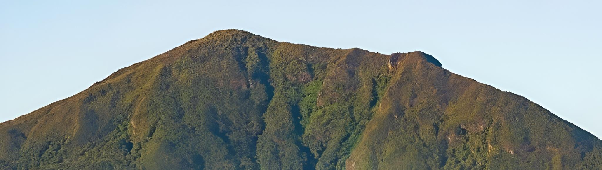
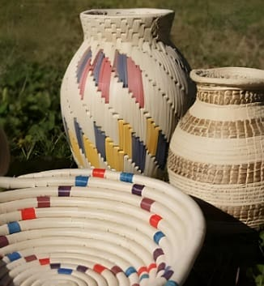
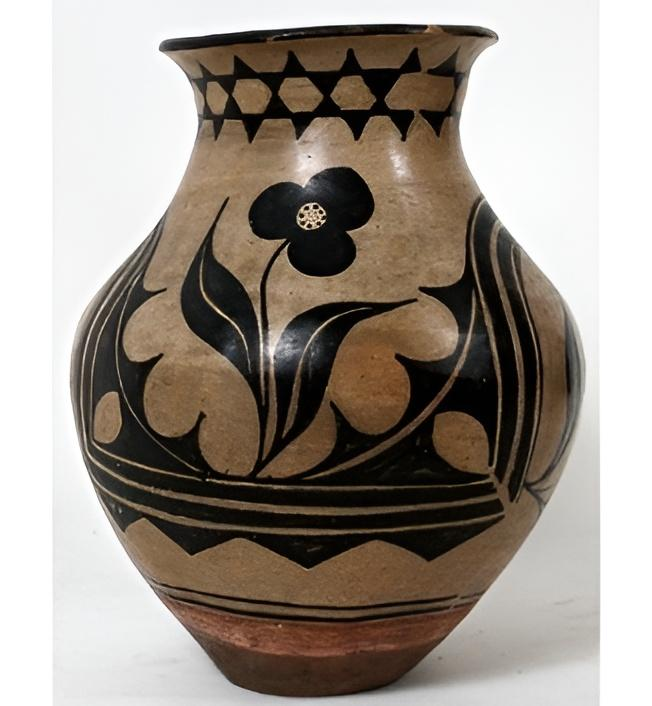
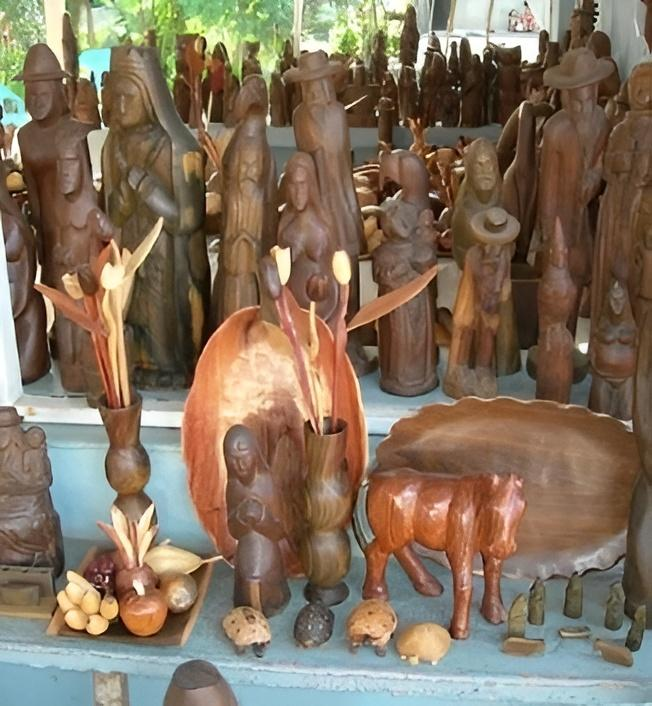

Venezuela
Venezuela es un país donde la alegría y la creatividad se expresan a través de sus artesanías. Los tejidos de palma, con sus intrincados diseños geométricos, son una muestra de la habilidad de los artesanos indígenas. La cerámica, con sus formas orgánicas y colores terrosos, refleja la conexión con la tierra. La talla en madera, con sus representaciones de la fauna y la flora local, es una expresión de la admiración por la naturaleza. Venezuela te invita a sumergirte en su rica cultura y a llevarte un pedacito de su alma en cada artesanía.
Artículos
Cestería Indígena
La cestería indígena venezolana tiene raíces ancestrales, siendo una de las expresiones artísticas más antiguas del país. Los pueblos originarios transmitieron de generación en generación las técnicas y diseños, que han evolucionado a lo largo del tiempo, adaptándose a las necesidades y estilos de vida de cada comunidad. Se caracteriza por la utilización de fibras naturales como el moriche, la palma, el bejuco y el bambú.
La cestería indígena es mucho más que un objeto utilitario. Representa la identidad cultural de los pueblos originarios, sus conocimientos ancestrales y su conexión con la naturaleza. Además, es una fuente de ingresos para muchas comunidades.
Nombre: Rafael Reyes
Correo electrónico: rafael.reyes.cesteríaarte@hotmail.com
Cerámica
La cerámica venezolana tiene una larga tradición, con influencias indígenas, africanas y europeas. Los pueblos originarios elaboraban piezas utilitarias y decorativas, y con la llegada de los españoles se introdujeron nuevas técnicas y estilos. La cerámica venezolana se caracteriza por su diversidad de formas, tamaños y colores.
Se utilizan arcillas de diferentes regiones, lo que le confiere a cada pieza una textura y color únicos. La cerámica es una expresión artística que refleja la creatividad y el ingenio del pueblo venezolano. Además de su valor estético, la cerámica tiene un importante valor cultural y social.
Nombre: Laura Moreno
Correo electrónico: laura.moreno.cerámica_ven@gmail.com
Talla de Madera
La talla en madera es otra manifestación artística con una larga tradición en Venezuela. Los indígenas tallaban figuras de madera con fines rituales y decorativos, y esta tradición se ha mantenido a lo largo de los siglos. Los artesanos utilizan herramientas como cuchillos, gubias y sierras para tallar la madera.
La talla en madera es una expresión artística que refleja la habilidad y el talento de los artesanos venezolanos. Además, es una fuente de ingresos para muchas comunidades.
Nombre: Kevin Gutiérrez
Correo electrónico: kevin.gutierrez.madera@hotmail.com